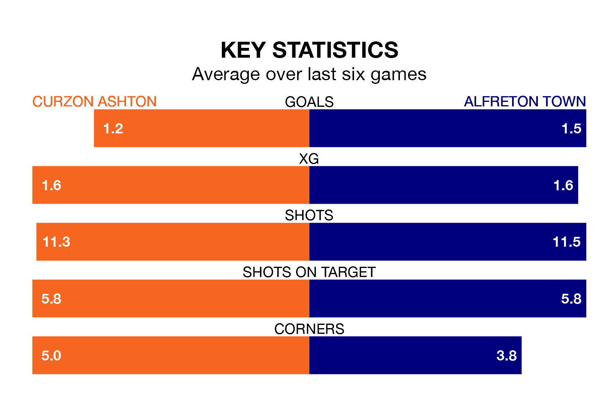

Curzon Ashton host Alfreton Town on Tuesday at the Tameside Stadium in National League North.
In their last league match, on December 26, Curzon Ashton beat Southport 3-2 at home.
Alfreton lost, 3-2 away at Chorley on January 30.
With 50 goals in 28 games so far this season, Alfreton are the league's third-highest scorers with 1.8 goals per game. And they are conceding at an average rate, letting in 37 goals at a rate of 1.3 per game.
Curzon Ashton are also above average scorers, with 1.4 goals per game, compared to a league average of 1.3. They have conceded 1.0 goal per game.
In the last 10 years, Curzon Ashton and Alfreton have played each other on 16 occasions. Curzon Ashton won five of them, Alfreton eight, and they drew three times.
On average, Curzon Ashton scored 1.4 goals and the Reds 1.8 in those matches.
Their last meeting was on February 25, when Alfreton won 1-0 away.
The hosts are seventh in the table after 29 games, of which they have won 13 and drawn eight, earning 47 points.
Town are two places behind Curzon Ashton in ninth, with 13 wins and seven draws putting them on 46 points.
Curzon Ashton are in mixed form in National League North, with three wins and three losses from their last six games.
With two wins and a draw over that period, the Reds' form is slightly worse – they have taken seven points from 18, compared to the home team's nine.
Updated: 10:40 (UTC), 01/02/24